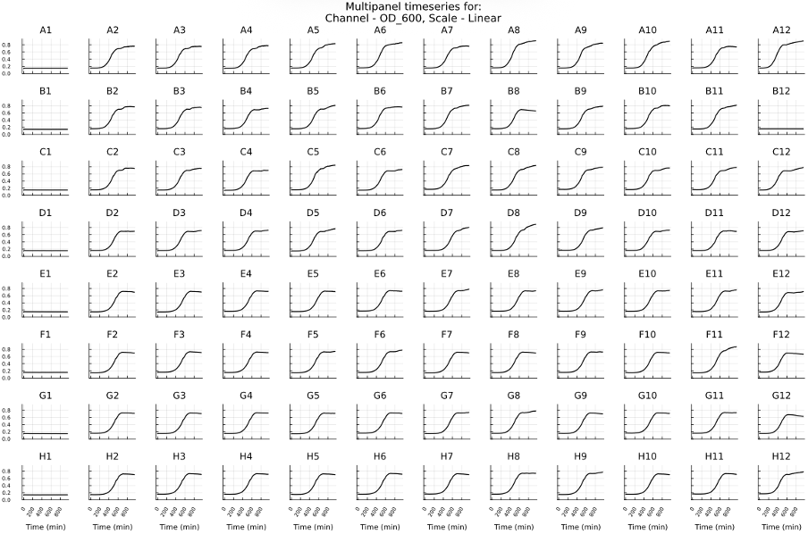
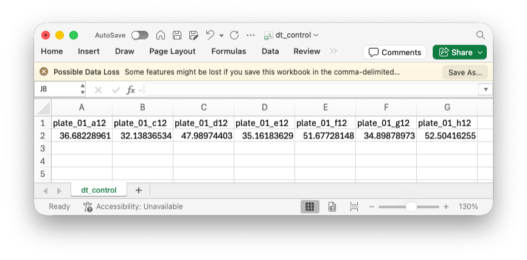

Getting Started with ESM
This tutorial will walk you through the complete workflow of processing experimental data with ESM, from initial data exploration to calculating doubling times, with data split into different groups (controls, high fluorescence and low fluorescence). We'll use some sample plate reader data (that you can download to follow along).
Prerequisites
For Windows users, this tutorial assumes you are using PowerShell, although this is not required to use ESM.
Installing ESM
- Download the source code and unzip it.
- Download Julia if you don’t already have it installed.
- Run
julia --project -e ‘using Pkg; Pkg.precompile(); Pkg.build()’from the root directory of the repository (i.e./where/you/saved/source/code/esm-main). If it fails, try running it a second time. - You can test if its working by running
esm template -h, if you see some documentation appear, ESM is successfully installed. - If you instead see an error
command not found: esm, you may need to add~/.julia/binto your PATH.
In order for your terminal to find esm, you may need to edit the PATH variable. How exactly you add a directory to your PATH depends on what shell you are using and your operating system. You can find this out by running the command echo $0. Common shells include Bash, zsh, and PowerShell. If using Bash, add the line PATH=$PATH:~/.julia/bin to ~/.profile or ~/.bash_profile. If you are using zsh, add the line PATH=$PATH:~/.julia/bin to ~/.zprofile (or add ~/.julia/bin to /etc/paths on MacOS). Depending on your operating system and shell, you may need to expand the ~ to specify your home directory in full (i.e. replace ~/.julia/bin with /Users/UserName/.julia/bin for example, or C:\Users\UserName\.julia\bin on Windows)
There are a few exceptions for Windows users. If you are using Windows 10, you may face a bug during precompilation involving MKL_jll. This can be fixed by installing this Visual Studio tool. To change the path variable, see this guide - it should be identical on Windows 10 and Windows 11.
Downloading the data
You can download the plate reader data from this link.
Step 1: Explore your data with esm summarise
First, let's examine our dataset using the command line interface. We can use esm summarise on any ESM-compatible data file (.fcs, .esm, raw plate reader, etc.).
To view the help guide for esm summarise, you can use esm summarise -h.
ESM.summarise — Function
esm summariseSummarise a data file (.esm, plate reader, .fcs, etc.).
Args
file: The data file to be summarised.
Options
-t, --type=<String>: The type of data file. Options are "auto" (default), "esm", "spectramax", "biotek", "tecan", "bmg", "generic", "fcs". If "auto" is selected, the type will be inferred from the file extension (or raise an error if not possible).
Flags
-p, --plot: Produce plots of the data. Not available for--type=esm.-c, --csv: Save the data as CSV files. Not available for--type=esm.
Our plate reader data is from a Tecan machine, and we want to generate plots of the data to see if it looks like we expect, so we specify the --type option as tecan and add the --plot flag.
esm summarise tecan-data.xlsx --type tecan --plotYou can also use short options for all the esm commands. In place of ‑‑type, you can use ‑t, similarly with ‑‑plot and ‑p. The following are all valid ways of specifying the type option: ‑ttecan, ‑t=tecan, ‑t tecan, ‑‑type tecan, ‑‑type=tecan (but not ‑‑typetecan).
Running esm summarise gives us some summary information about the channels available in the data, time ranges, number of wells/samples, etc. which is all printed to the terminal.
Since we used --plot (or -p), we now have a tecan-data.xlsx.pdf file with a few different plots of our data. Lets have a look at the OD_600 channel, on a linear scale.

After looking over our data, it's clear that the cells in the B12 well have failed to grow (A1-A12 are blanks, A12-H12 are negative controls). We will need to remember to exclude that from our analysis later. All the other wells look healthy, so we can move ahead with our analysis.
Step 2: Begin the analysis with esm template
Now that we know our data is good, we can begin analysing it. To do this, we need to create an esm template file using, you guessed it, esm template.
You can look at the help guide for esm template by running esm template -h. You'll see we can optionally specify a filepath for the template file (which will be a .xlsx file).
ESM.template — Function
esm templateProduce a template excel file for data entry into the ESM.
Options
-o, --output-path=<String>: The path to create the template in. Defaults to ESM.xlsx in the current directory.
esm template --output-path template.xlsxThis creates an Excel file called template.xlsx where we can provide ESM with information about your data, like file locations and machine types.
You might see in esm template -h that --output-path has a default behaviour. If you don't specify an output filepath, it will add the template file as ESM.xlsx in the current directory. So we could have used esm template (with no other options) to get the template file.
Step 3: Fill in the template
We will now go through and fill out the template, step by step.
The template is split up into five sheets of information to fill out.
Step 3.1: The Samples sheet
The first sheet to fill out is the Samples sheet. This is where you describe the location and type of your data files.
ESM allows you to import raw machine outputs for plate readers and flow cytometers, so you don't need to edit the raw data to put it into a compatible format. If you don't have the original files for your plate reader data, we provide another form for Generic tabular data.
We only have a single data file we want to analyse, so we will only fill out one row. If we had more data, we could include it here with additional rows.
The Type column defines whether the data is plate reader or flow and how that file should be imported. This will be plate reader for us.
The Data Location column gives the full filepath to the data. What you put here depends on where you saved the file tecan-data.xlsx.
The Channels column identifies the specific channels that you would like to save in the ESM file. If left blank, then all will be saved. Since we are only looking at growth rate here, we will only record the 600nm OD channel (called OD_600, as shown with esm summarise).
The Plate Reader Brand identifies the format the data will be in. Available options are: spectramax, biotek, bmg, tecan, and generic. Leave it blank for flow cytometry data. This is tecan for us.
The last few columns control the names of the data variables. Since plate reader data already provides well names we can leave the Well column blank. The plate name will default to plate_0$PLATE$, where $PLATE$ is the value in the Plate column (we will put 1 here). Alternatively, you can provide a plate name in the Name column.
In ESM, we refer to the data from a specific well as a sample, accessed under the variable syntax plate_01_a5. This includes all channels recorded for well A5 in plate 1. If we want data from a specific channel, as we normally do, we can index it like this: plate_01_a5.od. We can also do the same with groups (introduced in Step 3.3): blanks.od, returns only the od channel data for the blanks group of wells.

Step 3.2: The Channel Map sheet
Here, you can rename any channels. On the left, provide the channel name, as specified on the previous sheet. On the right, provide the new name for that channel. In this example, rather than using plate_01_a5.OD_600, we would then use plate_01_a5.od.

Step 3.3: The Groups sheet
In this sheet, you can group samples together. For example, you may want to group all of your blank wells together to make them easier to refer to.
There are a few formats for doing this. The simplest is to just write out all the samples in a comma separated list (i.e. plate_01_a1, plate_01_a2, plate_01_a3).
To make this a bit shorter, you may choose to use the compressed format. In this format, anything specified in [] is expanded.
Inside a [], you can put a comma seprated list of values, or a range with endpoints separated by :.
More details about the compressed format can be seen at Excel Interface.
Here, we use the compressed format so that:
- all wells on the left of a 96 well plate (A through H, column 1) are grouped as
blanks, - all wells on the right (A through H, column 12) are groups as
controls, - the remaining wells (A through H, columns 2 through 11) are split into two groups (rows A, B, C and D as
low_flus, and E, F, G and H ashigh_flus).
We also need to make sure we don't include well B12 in the control group, based on our preliminany look at the data with esm summarise.

Step 3.4: The Transformations sheet
On the transformations sheet, you can define the post-processing you want to apply to your data. This typically involves calibrations and calculating summary statistics.
In the example below, we calibrate our groups based on the blanks group, then calculate doubling times on each of the calibrated transformations.
More details about some of the inbuilt methods in ESM, like doubling_time() can be found in the Plate Reader and Flow Cytometry documentation, for now though, we will just use TimeseriesBlank() for calibration and Logistic() for growth rate/doubling time calculations.

For plate reader data, time is stored in its own special "well", so it can be accessed using plate_01_time (there is also a special well for temperature). It is useful to remember that the recorded times are different for each channel, so we want to use plate_01_time.od here. The time data is stored as a number of milliseconds, although ESM functions typically use inputs and outputs in the standard units of minutes. For flow cytometry data, time is stored as its own channel, rather than a well, so it is accessed as plate_01_a1.time.
Step 3.5: The Views sheet
Finally, the views describe a subset of transformations, groups, and samples that you actually want to look at, outside of ESM. This is typically used for your final post-processed data, but can also be useful for debugging (viewing inputs and outputs from a transformation to make sure it is working as intended).
In our example, we have a few views named dt_low, dt_high, and dt_control, each of which refers to the doubling time transformations, although views can also refer to samples or groups, not just transformations.

We've gone through how to fill in the Excel template quite quickly. If you want more in depth information, try checking out the Excel Interface page, which goes into more details on what is allowed and supported.
Step 4: Process the data with esm translate
Now we have filled out our template, we can translate it and our data into an esm file with esm translate. To see how to do this, lets check out esm translate -h.
ESM.translate — Function
esm translateTranslates the completed .xlsx template file to a .esm file.
Args
input: The completed .xlsx template file to be read.output: The filepath/destination for the .esm file.
We need to provide two arguments to esm translate, the completed template file to input and a file path to save the esm file output.
esm translate template.xlsx data.esmThis will:
- Read all specified data files,
- Combine results into a single ESM file.
When the esm file is created, none of the transformations are run. This may mean that you have successfully created the esm file, but there are still mistakes or bugs in the transformations and views.
Step 5: Explore the results with esm views
The final step is to calculate and output our doubling times, which we can do with esm views. Again, you may want to have a look at esm views -h to see what is required and what options you can provide.
We can now look at our calculated doubling times from our data. Lets just have a look at our dt_control view for now.
esm views data.esm --view dt_controlIf you don't specify the --view option, all views will be outputted. Since we have multiple views here, it would be easier to run esm views data.esm, but we don't do that so you can see how you specify a particular view you want.
Step 6: Analyse the data
You should now have a file called dt_control.csv which contains you doubling times for the controls. From here, you can freely generate publication-quality plots of the data in your preferred software, perform statistical tests on the data, and integrate with computational pipelines. Just remember to share your data.esm file so that others can reproduce your data (by running esm views data.esm on their own machine).

Best practices
- Summarise Data Early: Looking at plots of the data can help identify issues like contaminated wells, that may change how you want to analyse the data.
- Start Small: Its easy to fill out the template at the start, but this can make it harder to debug the transformations. Try going through, writing a transformation at a time and export it as a view to keep an eye on whats happening.
- Save Excel: Make sure you save the Excel template before calling
esm translate. Autosaves are not always enough. - Remember the order of ESM operations: Using
esm translatewill import and check your raw data, and collect groups, but it won't check your transformations and views. If you are getting errors when trying to generate views, this may be due to transformations being incorrectly defined, rather than just your views.
Next steps
If you want to learn more about ESM, you can go to:
- Plate Readers to learn about the functionality and different methods available for working with plate reader data, like
TimeseriesBlank()andLogistic()used here. - Flow Cytometry to learn about the calibration and gating methods available for working with flow cytometry data.
- Command Line Interface to learn about all the features of the command line interface (
esm summarise,esm translate, etc.). - Data Format to learn about how
.esmfiles are structured. - Excel Interface to learn more details about how the Excel template file works and its format.
Getting help
If you encounter issues, open a new issue with details about your problem.